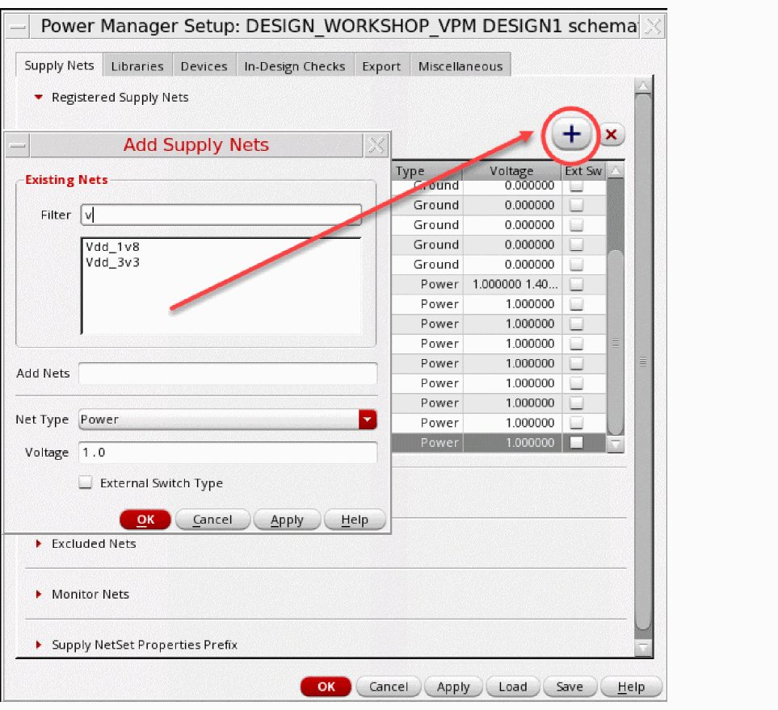

Registering Name-Based Supply Nets
You can set a rule to register certain names as names of power nets or ground nets. If a net in your design has one of the registered names, the net is identified accordingly. It is recommended to follow a similar naming convention for supply net naming across the design hierarchy. Here are the steps to register the supply nets.
- Double-click the fields in the Registered Supply Nets table to edit.
-
To add the supply nets, click
.
It opens the Add Supply Nets form. - Specify the values in the form for registering supply nets.
-
Click
 to remove added supply nets.
to remove added supply nets. -
Press
Shift+Ctrlto select nets and register them as power or ground. Simultaneous registration of existing and user-defined nets as power/ground is possible.

You need to specify the voltage values of the net for the top-level supply nets. You also need to register internal nets, such as low drop out (LDO) nets or output of a voltage divider, and provide the voltage values for such internal nets. For a hierarchical design, the voltage values specified from the top-level nets are propagated to the levels below in the following ways:
- If the cells used in the design do not have their associated Liberty file, the voltage propagation for them happens hierarchically as per the top-level voltage values.
- If the cells used in the design have their associated Liberty/1801 cell bindings, the voltage map (from Liberty) or power states (from 1801) are expected to match the voltage levels specified for top level supplies.
You can also define multiple voltages for a top-level net. If you define multiple voltages for both power nets and ground nets, Power Manager considers all possible supply states based on all the supply net voltages provided in the setup. In-Design Checks consider all possible supply states based on all the supply net voltages provided in the setup information. The supply states are created depending upon the unique voltage values for a power net–ground net pair.
Consider a voltage specification with supplies VDD, VSS, and VDD1V2 where VDD is 0.8V and 1.0V, VSS = 0.0V and 0.4V, and VDD1V2=1.2v.
netVoltages (("VDD" (0.8 1.0))
("VDD1V2" (1.2))
("VSS" (0.0 0.4)))
The following power modes are created:
| Supplies | VDD | VDD1V2 | VSS |
|---|---|---|---|
You must provide the supply net voltage values for creating the power states based on the switching behavior of the corresponding supply nets.
Specifying net voltages in the setup is not mandatory if the import flow is used.
Related Topics
Registering Supply Set and Power Domain
Loading Power Intent Extraction Options from a File
Saving Power Intent Extraction Options to a File
Return to top